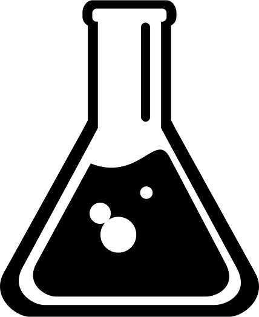

Observe:
In this ring you will find all the topics that we at Novatec have in mind and are currently observing.
Evaluate:
This ring contains all topics that are of interest to us and that we are already evaluating and investigating.
Build-Up:
Here you will find all topics that are currently under construction in our company and where we are building up expertise. Topics in this ring have been observed and evaluated earlier.
Work:
All topics in this ring are used by us in connection with consulting, development and training services. We are experts in these topics.
 Reduce:
Reduce:
However, we are slowly reducing the use of these topics and are certain that we will use them less in the near future.